| Chapter | Page |
|---|---|
| 1. Steam Turbine Theory and Construction | 1 |
| 2. Steam Turbine Auxiliaries and Control | 75 |
| 3. Steam Turbine Operation and Maintenance | 131 |
| 4. Steam Condensers | 161 |
| 5. Internal Combustion Engines - Components and Auxilia | ries 217 |
| 6. Internal Combustion Engines - Operation and Maintena | nce 261 |
| 7. Gas Turbine Design and Auxiliaries | 303 |
| 8. Gas Turbine Operation and Control | 377 |
| 9. Lubrication | 425 |
| 10. Piping | 481 |
| 11. Mechanical Drawing | 533 |
| End of Chapter Questions and Solutions | 567 |
| 40 | |||
| 39 | 0 | ||
When you complete this learning material, you will be able to:
Explain the design and components of a steam turbine and calculate nozzle and steam velocities.
You will specifically be able to complete the following tasks:
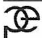
Steam turbines are used in various plants and cycles to convert the heat energy in the steam generated in fired boilers and heat recovery steam generators into mechanical work. The selection of a specific type of steam turbine depends upon factors including the steam conditions provided by the steam generator, the unit rating, the desired flexibility of the system, and compatibility with the heat balance of the plant. Turbines are available in small sizes for driving pumps and fans to multi-casing units for power generation. Power generation turbines are available in sizes from a few megawatts to over 1000 megawatts.
An almost limitless series of arrangements are available in adapting the turbine to power plant requirements. This is a distinct advantage when we consider the many varied heat balance needs of modern industry. There are two general classes into which all turbines fall. Turbines exhausting at pressures below atmospheric pressure are condensing turbines and those exhausting at or above atmospheric pressure are noncondensing turbines. Condensing turbines are used where there is no need for process steam. A condenser, cooled by either air or water, is required to condense the exhaust steam. Noncondensing turbines are used when the exhaust steam is utilized for process heating.
In some condensing turbines not all of the steam passes through to the exhaust. Part of the steam is extracted, or bled off, at one or more points. After doing some work by expansion, the extracted steam is used to heat the feedwater. This cycle, which uses bled steam to heat feedwater, is called a regenerative cycle and the turbine is called a bleeder turbine .
Similarly, steam may be drawn off at one or more points at different pressures for process steam. This requires automatic control of the steam quantity supplied to the lower pressure section of the turbine. This arrangement is termed automatic extraction in contrast to bleeder turbines, where the pressure at the bleed points varies with the steam flow through the turbine. Bleed points range in number from one to eight, but extraction generally requires only one or two pressure levels.
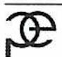
There are as many types of steam turbines as there are types of power plant. They are used for small gas fired cogeneration plants, for subcritical and supercritical fossil fuel fired plants, and for nuclear power plants. Industrial plants, such as chemical plants, refineries, and pulp mills, often use steam turbines to generate power for the plant site.
Fig. 1 illustrates the casing arrangements offered by a Japanese turbine manufacturer. The 2 and 3 casing designs are for fossil fuel fired plants up to 1000 megawatts (MW). The 4 casing arrangement is often found in fossil fuel fired plants of 600 MW and above. The 4 casing (cross compound) arrangement is common in nuclear power plants from 800 MW to over 1300 MW.
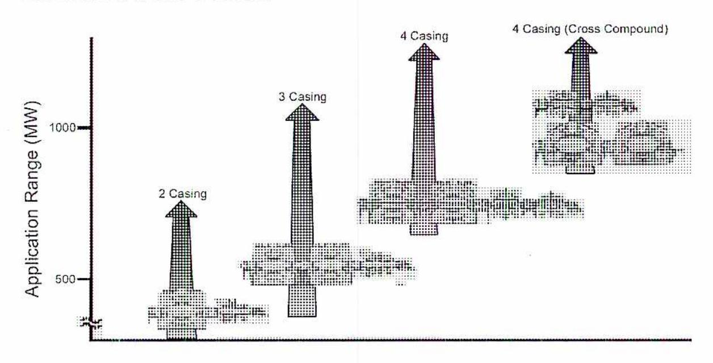
Figure 1 Turbine Casings and MW Ratings
The 2-cylinder reheat turbine in Fig. 2 has the HP (high pressure) and IP (intermediate pressure) rotors in the first case. The LP (low pressure) case contains a double-flow rotor. In a double-flow rotor, the steam enters at the centre of the rotor with half of the steam flowing toward the front of the machine and half towards the rear. It exhausts downward into the surface condenser.
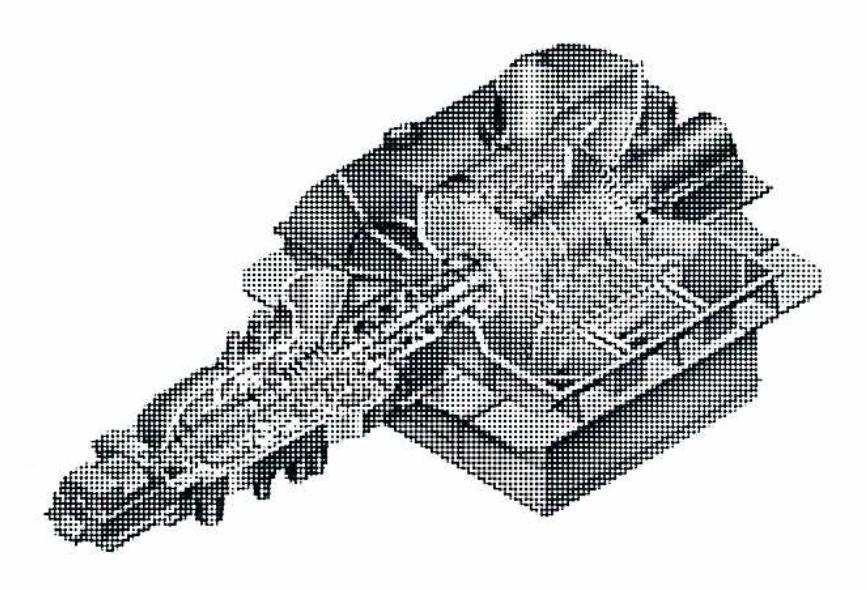
Figure 2 2-Cylinder Reheat Turbine
Another 2 case machine is shown in Fig. 3 with the exhaust steam ducted axially into a surface condenser. The surface condenser is on the same level, or floor, as the turbine. This arrangement uses less plant space than designs with the turbine above the condenser.
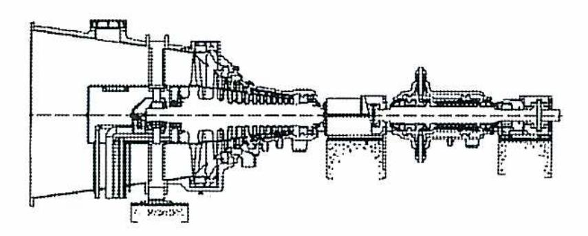
Figure 3 Two-Cylinder Reheat Steam Turbine
The steam flow through these units is too high to build in a tandem compound arrangement, such as those in Fig. 2 and Fig. 3. A tandem compound machine has all of the turbine rotors and load connected axially into a single shaft. Cross compounding features two separate and unconnected shafts, with the steam flowing from one machine to another. Nuclear steam generators operate at lower pressures and lower temperatures than similar sized fossil-fired units.
The 4 casing cross compound design used for nuclear power plants is shown in Fig. 4. The HP and IP sections drive one generator, and the LP cases drive the second generator.
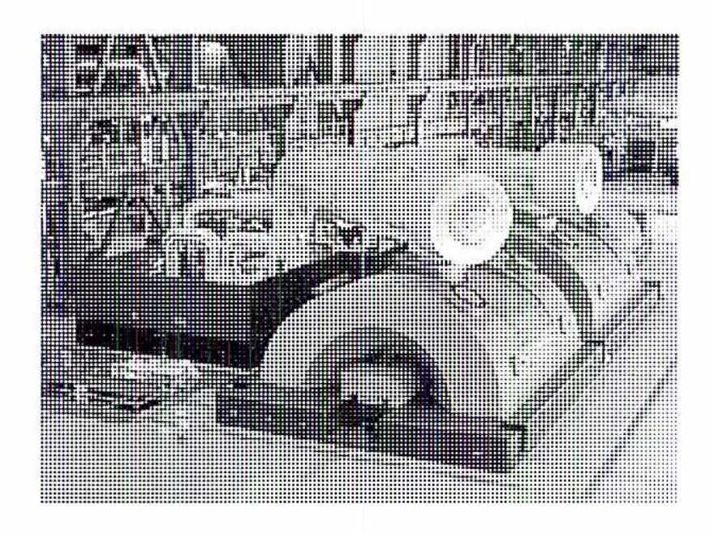
Figure 4 Cross Compound Steam Turbine
Steam turbines for industrial applications range in size from fan or pump drivers to units of 50 MW. They often drive large compressors. Fig. 5 shows a General Electric (GE) mechanical drive turbine. These turbines are built in ratings from 7.5 to 900 kW, running at speeds from 1000 to 6500 rev/min. They are used to drive pumps, compressors, fans, blowers, and similar equipment. The turbine illustrated in Fig. 5 is a single-stage, velocity compounded, impulse type. Two rows of moving blades are arranged with a row of stationary blades between them.
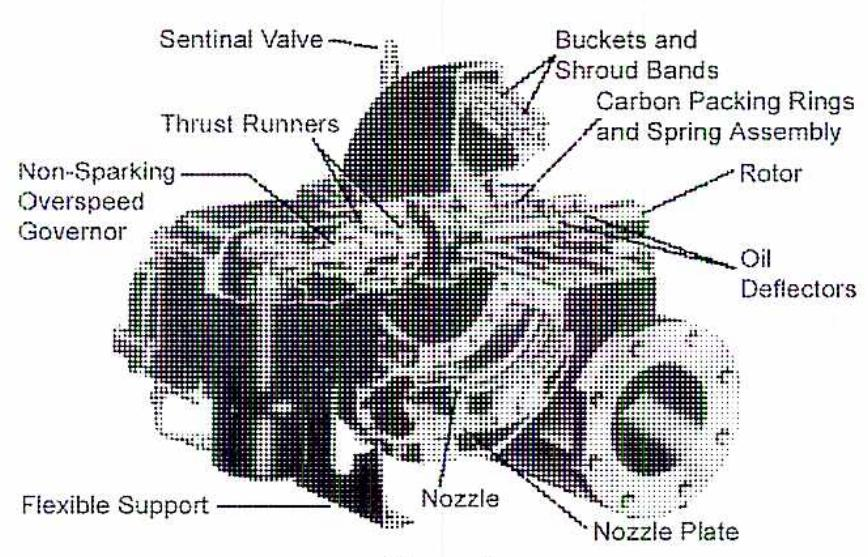
Figure 5 Single-Stage Mechanical Drive Turbine (Courtesy of General Electric)
The turbine shown in Fig. 6 is an Allis-Chalmers with two extraction points. Two impulse wheels are used, one before the HP reaction staging and one before the LP reaction stages. This is a typical extraction type of turbine. This machine is rated at 4000 kW at 3600 rev/min.
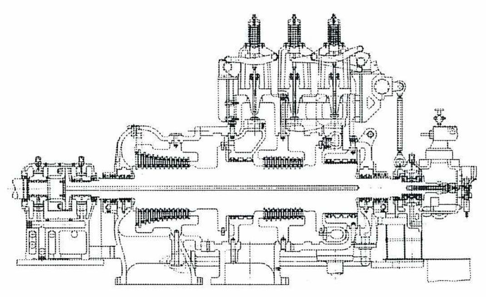
Figure 6 Automatic Extraction or Mixed Pressure Type Turbine
Fig. 7 shows a GE industrial turbine with the top casing removed. These turbines come in many sizes.
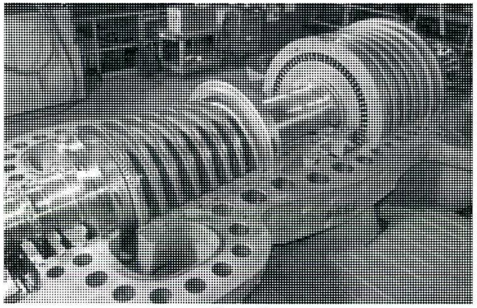
Figure 7 GE Industrial Turbine
Table 1 shows the various sizes available from GE. The most common sizes are from 15 to 50 MW. Smaller units down to 1 MW are available, as are units up to 100 MW.
Table 1 GE Small Turbines
|
Turbine
Gode |
Туре |
Backpressure
Limits |
Pressure | Temp |
Single /
Multivalve |
Power
Range |
Speed
Range |
Steam Path
Technology |
|---|---|---|---|---|---|---|---|---|
| NG | Backpressure | Up to 20 bar |
70 bar
1000 psi |
540°C
1000°F |
Multi | 1 to 50 MW |
3000 to
16000 RPM |
Impulse / Reaction
Hybrid |
| HNG | Backpressure | Up to 20 bar |
140 bar
2000 psi |
540°C
1000°F |
Multi | 1 to 50 MW |
3000 to
16000 RPM |
Impulse / Reaction
Hybrid |
| HG | Backpressure | Up to 60 bar |
140 bar
2000 psi |
540°C | Multi | 1 to 40 MW |
3000 to
16000 RPM |
Impulse / Reaction
Hybrid |
| NK | Condensing | N/A |
70 bar
1000 psi |
540°C
1000°F |
Multi | 1 to 65 MW |
3000 to
16000 RPM |
Impulse / Reaction
Hybrid |
| ник | Condensing | N/A |
140 bar
2000 psi |
540°C
1000°F |
Multi | 5 to 100 MW |
3000 to
12500 RPM |
Impulse / Reaction
Hybrid |
| Р | Backpressure | Up to 80 bar |
80 bar
1150 psi |
480°C
900°F |
Single | Up to 5 MW |
Up to
16000 RPM |
Impulse |
| MP | Backpressure | Up to 150 bar |
150 bar
2150 psi |
540°C
1000°F |
Multi | Up to 40 MW |
Up to
16000 RPM |
Impulse |
| С | Condensing | N/A |
80 bar
1150 psi |
480°C
900°F |
Single | Up to 6 MW |
Up to
16000 RPM |
Impulse |
| мс | Condensing | N/A |
150 bar
2150 psi |
540°C
1000°F |
Multi | Up to 40 MW |
Up to
16000 RPM |
Impulse |
A packaged axial flow turbine generator set is shown in Fig. 8. This is a compact design suitable for small power plants or cogeneration applications. It comes complete with a generator and surface condenser.
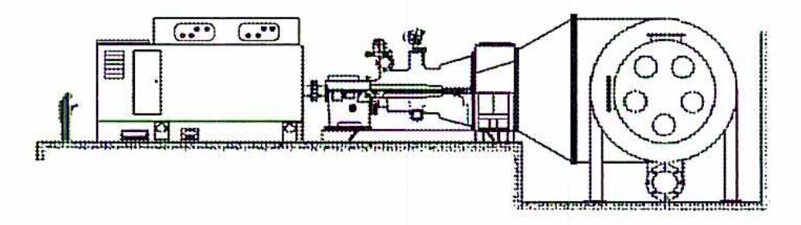
Figure 8 Packaged Axial Exhaust Turbine
Turbine casings are designed to handle high pressures and temperatures while:
Horizontal split casings or cylinders are used to facilitate assembly and inspection. This is not ideal as the heavy flanges of the joints are slow to follow the temperature changes of the cylinder walls. Casings are made of thick material in order to withstand the high pressures and temperatures. In practice, the thickness of walls and flanges decreases from the inlet to the exhaust end.
Large casings for low-pressure turbines are constructed of welded plates. Smaller low-pressure casings are cast iron, which may be used for temperatures up to 230°C. Casings for intermediate pressures are made of cast carbon steel able to withstand temperatures up to 425°C. High-pressure, high-temperature casings used for temperatures above 550°C are made of cast alloy steels like 3% chromium and 1% molybdenum. Higher temperatures require higher alloy metals (higher chromium content). The alloys must also have a high creep resistance to operate at these temperatures.
Casings are made steam tight without the use of gaskets by machining their flange surfaces to a very exact and smooth surface and then joining those surfaces accurately and securely together. Dowel pins are often used to secure exact alignment of the flange joint. A boring mill machines the inside of the casing. Grooves are machined for the diaphragms (for impulse turbines) or for stationary blades (reaction turbines). The casing is also bored for shaft seals and bearings.
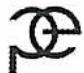
For high-pressure casings, the flanges must be very thick. Consequently, they will heat up much more slowly than the casing walls. Some type of auxiliary flange heating is often used for quicker and more uniform heating of the flanges and casing. Steam flows through machined channels between the flanges or through holes drilled axially through the upper and lower flanges.
Fig. 9 shows the lower section of a horizontally split casing. The centreline support allows the casing to expand and contract evenly while maintaining alignment.
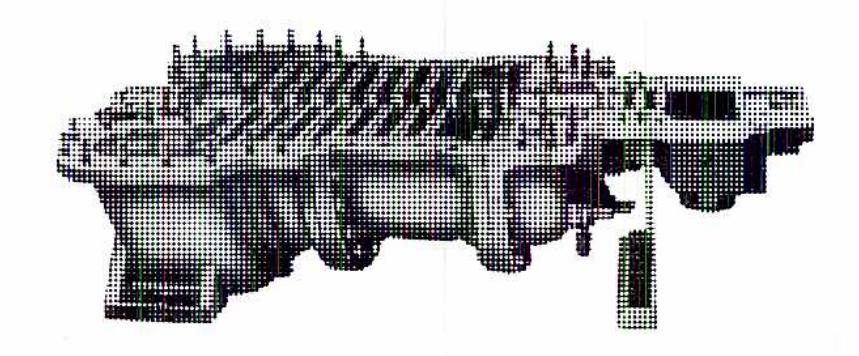
Figure 9 Turbine Lower Casing and Support
Double casings are used for very high steam pressure applications. The highest pressure is applied to the inner casing, which is open at the exhaust end. The turbine inner casing exhausts to the outer casing. The pressure is divided between the casings, and more importantly, so is the temperature. The thermal stresses on casings and flanges are greatly reduced. Fig.10 illustrates a double-shell HP turbine casing.
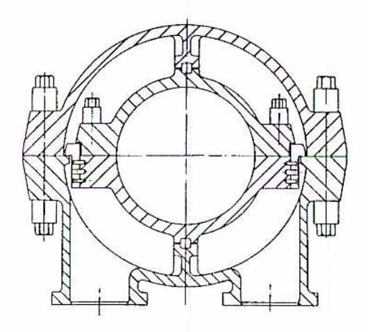
Figure 10 Double-Shell HP Casing
It is important that the steam moving through the turbine be as dry (absence of water) as possible. Water in the steam causes a loss in turbine efficiency and corrodes the turbine blading it comes in contact with. Turbines are designed to have slightly wet steam exiting the low-pressure blading. It is generally accepted that the maximum percentage of wetness of the steam leaving the exhaust end of a turbine should be 14%.
The shape of the cylinder casing allows this water to drain to the condenser. Special draining grooves are arranged in the cylinder casing to help remove water more effectively. An example of this type of draining arrangement is illustrated in Fig.11.
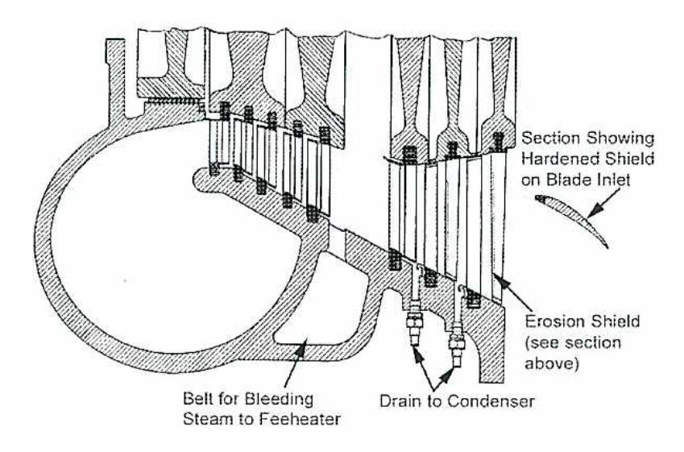
Figure 11 Cylinder Casing Drainage
Drains must be located, and be of sufficient number, to avoid buildup of condensate at any point in the turbine. Liquid water is likely to be re-entrained into the steam flow causing erosion of the turbine blades and diaphragms. Standing pools of condensate will also cause severe corrosion of the turbine casing. Turbines are designed to avoid the formation of condensate before the steam reaches the exhaust end. Condensate that forms prematurely (called early condensate) may be corrosive (if it has a low pH) and should be drained as quickly as it forms.
Turbine rotors (Fig. 12) are categorized in three ways according to construction:
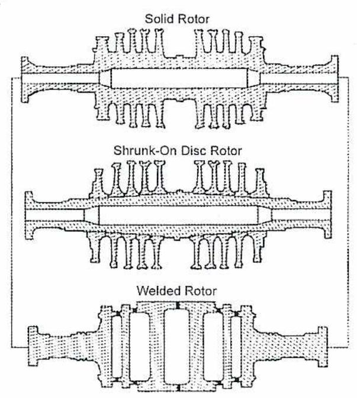
Figure 12 Turbine Rotors
Rotors of this type have wheels and shaft machined from one solid forging, the whole rotor being one piece of metal. This is a rigid construction. Solid rotors eliminate the possibility of loose wheels, which can occur with shrunk-on type rotors. Grooves are machined in the wheel rims of solid rotors to attach the blading.
Solid forged rotors are used in the HP and IP cylinders for designs employing impulse type blading and for IP cylinders when reaction type blading is used. Fig. 13 shows a rotor of the solid forged type.
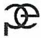
The choice of a solid rotor is dependent upon the turbine startup procedure. Stresses in the rotor material are caused by the temperature differences between the surface areas and the centre parts of the rotor. The rotor temperature becomes more uniform as the rotor is heated by the steam. The turbine is warmed up slowly, allowing for uniform heating across all areas of the turbine. This ensures balanced thermal expansion between the rotor assembly and the casing. The stress levels in a rotor are affected by the steam temperature, the diameter of the rotor, and the time taken to reach full-load operating conditions.
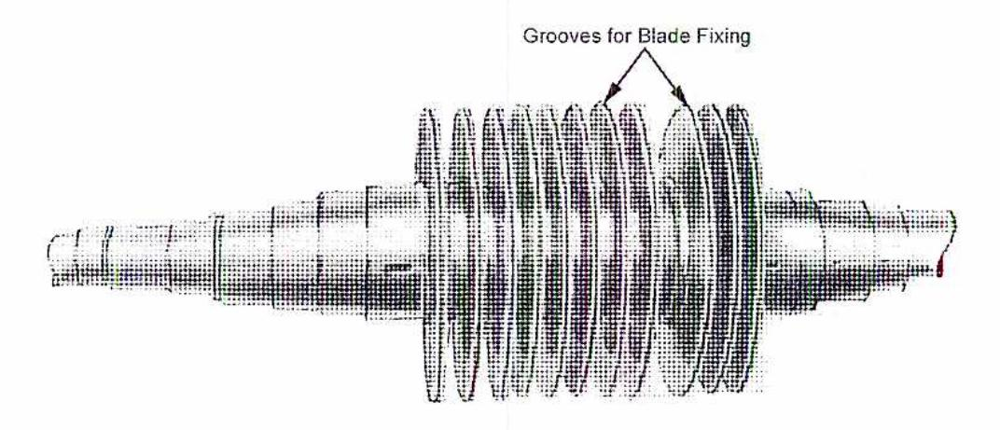
Figure 13 Solid Forged Rotor
The disc rotor is constructed of a number of separately forged discs or wheels. The hubs of these wheels are shrunk or keyed onto the central shaft. The outer rims of the wheels have grooves machined to allow for attaching the blades. Suitable clearances are left between the hubs to allow for expansion axially along the line of the shaft. Disc rotors are also referred to as built-up rotors.
Under operating conditions, the temperature of the wheels rises faster than that of the shaft. This might tend to make the wheel hubs become loose. To avoid any such danger, care is taken during construction of the rotor to ensure the wheels are shrunk on tight and correctly stressed. Fig. 14 illustrates a disc type of rotor which is the type used in the LP cylinder of most designs of large turbines.
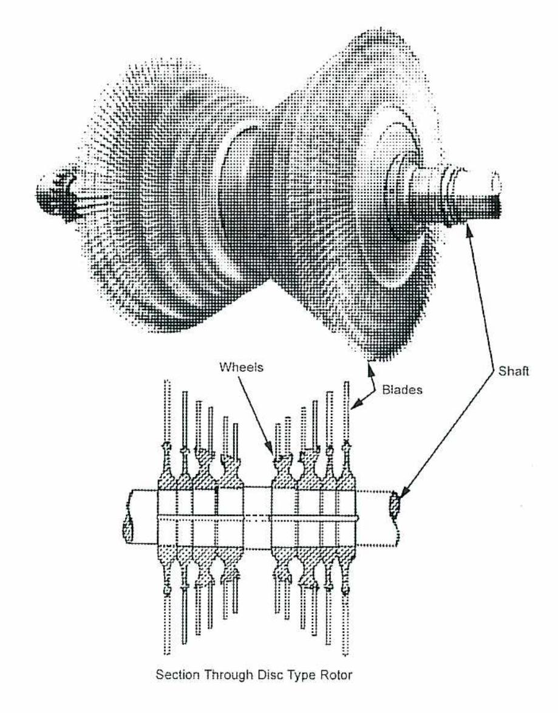
Figure 14 Disc Type Rotor
Welded rotors are built up from a number of discs and two shaft ends. They are joined together by welding at the circumferences. Because there are no central holes in the discs, the structure is very strong. Small holes are drilled in the discs to allow steam to enter inside the rotor body and supply uniform heat to the rotor. Grooves are machined in the discs to attach the blades.
A fairly light and rigid drum rotor may be manufactured from discs welded together to form a drum, as shown in Fig. 15. Before welding, the rotor is heated by induction heating. Welding is performed with automatic welding machines such as the argon arc process, where the arc burns in an argon atmosphere.
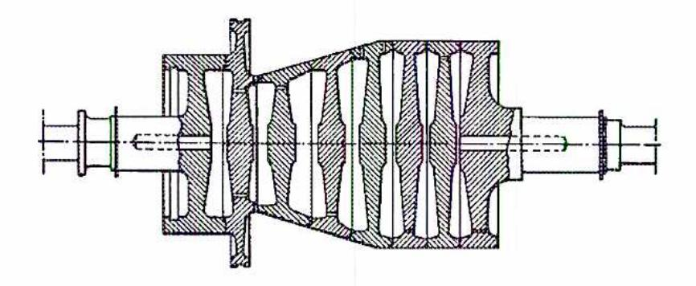
Figure 15 Welded Drum Turbine Rotor
The design of turbine blading affects the reliability and efficiency of the turbine. Depending upon the design of the turbine, there is either:
The longer the blade the greater the bending force at the root, or fixing point, of the blade. There is also a centrifugal force, due to the speed at which the blade is rotating, trying to throw the blade outwards.
These two forces—the bending force and the throwing-out force—are at maximum in the largest blade wheel at the LP exhaust end of the turbine. Thus, the stresses which these forces impose limit the size of the blades and the diameter of the last wheel. This limitation is one of the reasons why turbines are designed with double flow in the LP cylinder. In the double flow design, steam enters at the centre of the rotor with half of the steam flowing to the front of the machine and half flowing toward the rear of the machine. This design can handle double the flow of steam compared to a single flow with the same diameter of blading. The rotor in Fig. 2 is a double flow rotor.
The mechanical stresses just described are not a great problem in the short HP moving blading. This blading is subject to higher temperatures, which is a greater problem from the design aspect.
In reaction blading, pressure drops occur across both fixed and moving blades. In the HP cylinder, a very effective seal between fixed and moving blading is essential to prevent steam leakage. Steam that leaks or bypasses the blades produces no work and reduces the efficiency of the turbine. Fixed blades fit in grooves in the cylinder casing and moving blades fit in grooves machined in the rotor.
Blading subject to high temperatures in HP cylinders are made with root section and shrouding in one piece. The shrouds have a projecting portion thinning down to form a single knife-edge on the moving blades. On the fixed blades, a second strip is tapered to form a double knife-edge. The blade packets fit in the grooves to form a complete row of fixed or moving blades. The blade packets are serrated along the roots and secured in the grooves, which are also serrated, by means of a side-locking strip as shown in Fig. 16.
An illustration of reaction blading is shown in Fig. 16. The leakage of steam is controlled by the axial clearance, that is, the clearance along the line of the shaft. This type of sealing is known as end tightening. Additional sealing is provided by a radial fin machined into the shroud and adjusted to a fine clearance between cylinder bore or rotor body.
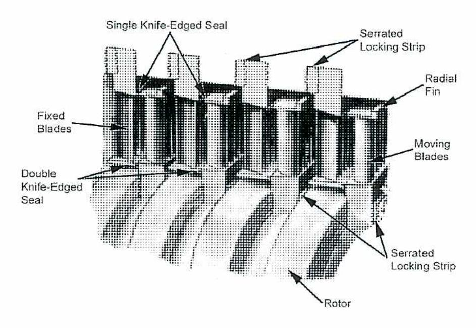
Figure 16 HP Reaction Type Blading showing End Tightening
The shrouding supplies support strength to the blades in addition to preventing steam leakage, as shown in Fig. 17. In lower pressure stages of the turbine where support is more important than sealing, a lacing wire is used, as in Fig. 18. Turbine blades must be made of materials which will withstand high temperatures in the inlet stages, and low temperatures but high rotational stresses in the exhaust stages. The most common material in use today is stainless steel having low carbon content, about 0.1%, and a chromium content of about 12%. This material is strong, resistant to corrosion and erosion, and can be forged, machined and welded.
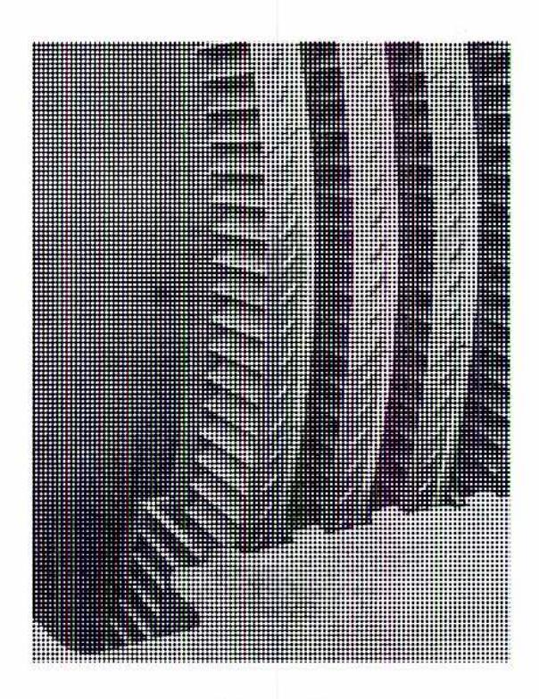
Figure 17 Shrouded Built-up Reaction Blading
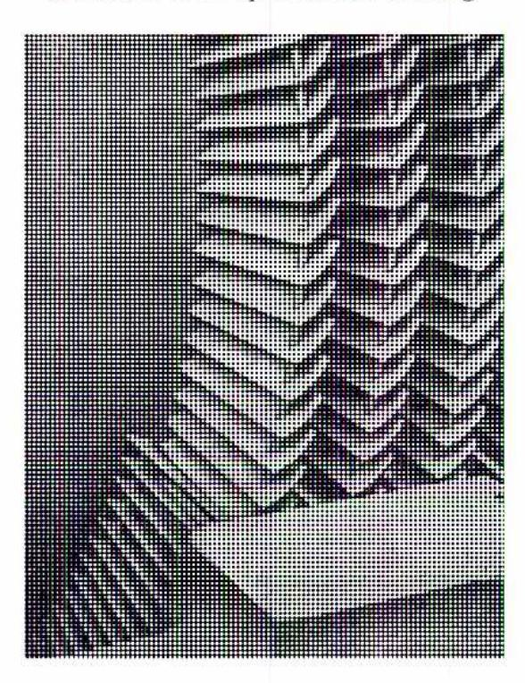
Figure 18 Unshrouded Built-up Reaction Blading
The HP moving blades for impulse turbines are machined from solid bar, and the roots and spacers are formed with the blade. This is illustrated in Fig. 19. Tangs are left at the tips of the blades, so that when fixed in position in the wheel, the shrouding can be attached. The shrouding is made up from sections of metal strip punched with holes to correspond with the tangs. The strip is passed over the tangs which secure the strip in position. The shrouding fits in separate sections to allow for expansion.
There is no pressure drop across the moving blades of an impulse turbine, and therefore, the sealing arrangements are not as important as in the reaction type. The shrouding on the impulse blading helps to guide the steam through the moving blades, allowing larger radial clearance and strengthening the assembly.
Due to the steam pressure difference on each side of the diaphragm, it is necessary to provide seals at the hole, where the shaft passes through the diaphragm, to prevent steam leakage along the shaft.
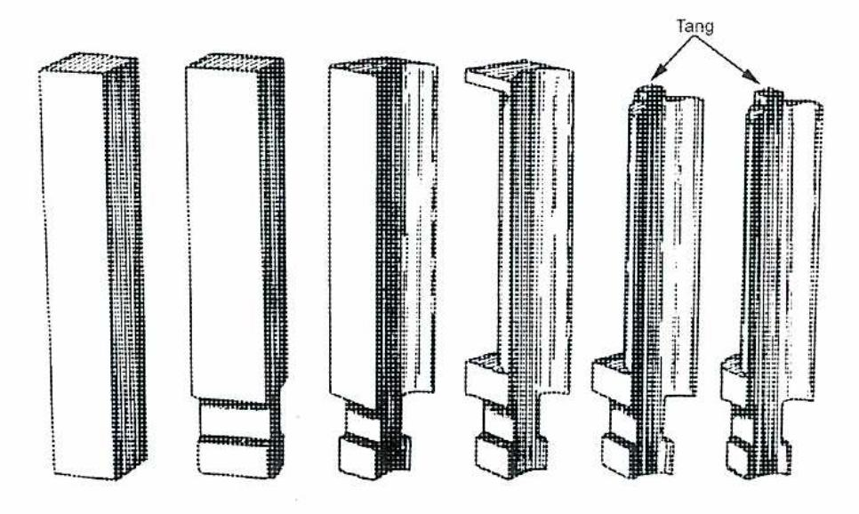
Figure 19 Stages in the manufacture of HP Impulse Type Moving Blades
A significant improvement in steam turbine efficiency was brought about by the use of computer modelling of steam flows through turbine blading. The shape of the blading changed after 3-D (3-dimensional) modelling. The blading profile, or shape, is not symmetrical; it changed from parallel sided to twisted or bowed. Fig. 20 compares conventional turbine blading and 3-D modelled blading. The resulting steam flow is more evenly distributed across the blading with 3-D modelled blading. Fewer vortices with a less turbulent flow are other advantages of 3-D modelled blading. The twisted shape of a low pressure case blade (3-D modelled) is shown in Fig. 21.
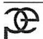
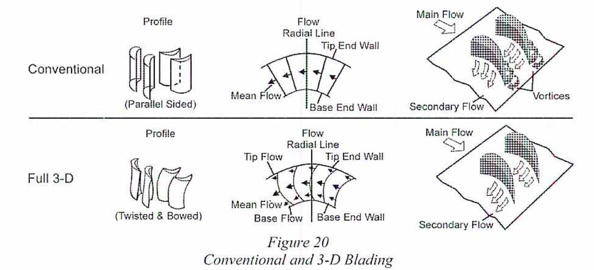
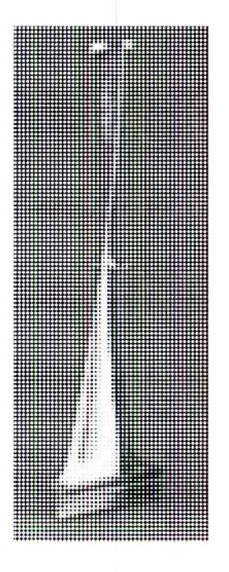
Figure 21 Low Pressure Turbine Blade
Fixed blading of an impulse turbine consists of nozzles mounted in diaphragms. The diaphragm is made in two halves; one half is attached to the upper half of the cylinder casing, and the other half is attached to the lower half of the cylinder casing. The diaphragms are positioned in the cylinder casings by means of keys that allow for some expansion. Special carrier rings support the diaphragms in HP cylinders.
At the HP end of the turbine, the diaphragms are the built-up type. Nozzles are machined separately from a solid bar and attached by grooves and rivets to the diaphragm plate. In some cases, the nozzles are welded together and to the plate. Fig. 22 illustrates attachment of nozzles to the diaphragm plates.
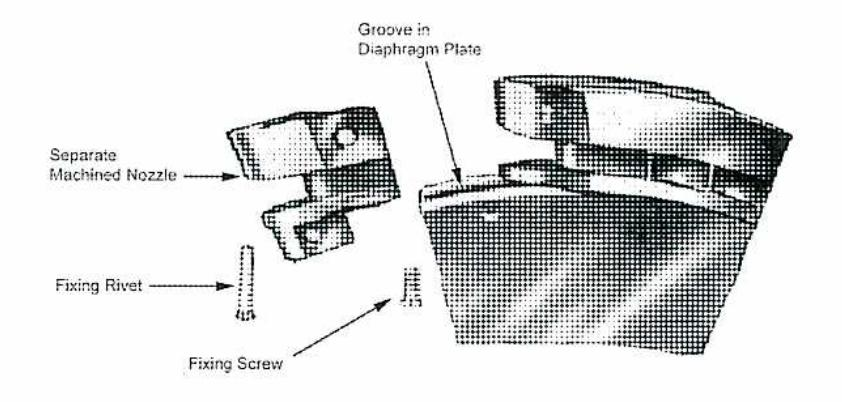
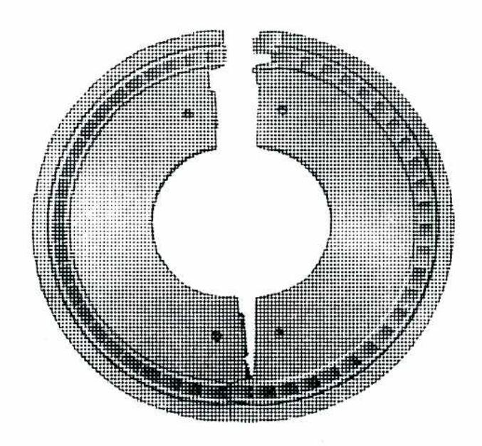
Figure 22 Built-up Diaphragm
| 0 | ||
|---|---|---|
| 0 | ||
| 0 |
Describe shaft seal designs, including stuffing boxes, carbon rings, labyrinth and water seals.
Due to the design and operating characteristics of steam turbines, there are a number of pressure differential points across stages and sections of the turbine. Leakage of steam across these points is a waste of energy and reduces the efficiency of the turbine. Leakage is kept to a minimum at all times. At the high-pressure end of the turbine, correct shaft sealing keeps the steam from leaking past the shaft.
At the low-pressure end of noncondensing turbines, the potential for steam loss to the atmosphere is greatly reduced due to the smaller pressure difference across the casing to the atmosphere. In condensing units, the final stages of the turbine operate below atmospheric pressure tending to draw air into these stages. Air infiltration must be minimized and/or eliminated as the air increases the pressure in the condenser. The increased backpressure decreases the efficiency of the turbine and increases the cooling load on the condenser.
Four methods of sealing rotating parts are:
Stuffing boxes are often used in centrifugal pumps. They are used only rarely on the smallest of turbines.
An effective seal is produced by a series of spring-backed carbon rings. Fig. 23 shows four rings mounted in a packing box or container. The detail at the right side of the figure indicates how each ring is divided into three sections. The spring encircles the ring allowing some radial adjustment but preventing axial movement. Clearances are held extremely close and the graphite (carbon) is self-lubricating.
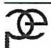
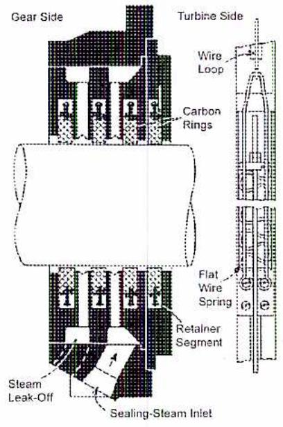
Figure 23 Carbon Ring Shaft Seal
In large machines, the greater shaft diameters increase the surface speed above the limits of carbon rings. Labyrinth rings are effective for larger shafts (see Fig. 24). The seals function by breaking down the leakage over a number of steps (depending on the pressure drop involved). Each step causes eddy currents reducing the velocity of the steam through the preceding clearance. The total pressure drop is broken down into many small pressure drops. Sealing steam maybe added partway down the shaft. A steam leakoff section is used to bleed off steam before it exits along the shaft to atmosphere. The leakoff also removes any condensate that forms in the seal.
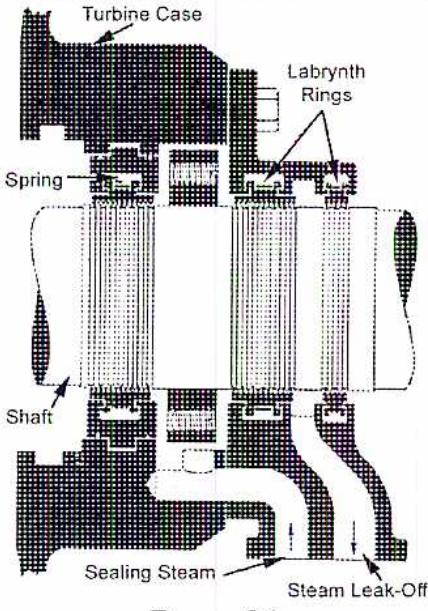
Figure 24 Low-Pressure Labyrinth Shaft Seal
Labyrinth and carbon rings reduce but do not eliminate leakage of steam where the shaft leaves the casing. A water sealing gland used in combination with labyrinths effectively provides a positive seal. This gland, shown in Fig. 25, is quite simple in its application. It consists of a centrifugal pump runner (impeller) fixed to the turbine shaft. Cooling water (usually condensate) is fed to the runner and builds up a ring of water under centrifugal pressure at its periphery. The ring of water forms a positive seal. A detailed view of the seal is shown in Fig. 26. The main advantage of water seals is that there is no leakage steam at the shaft.
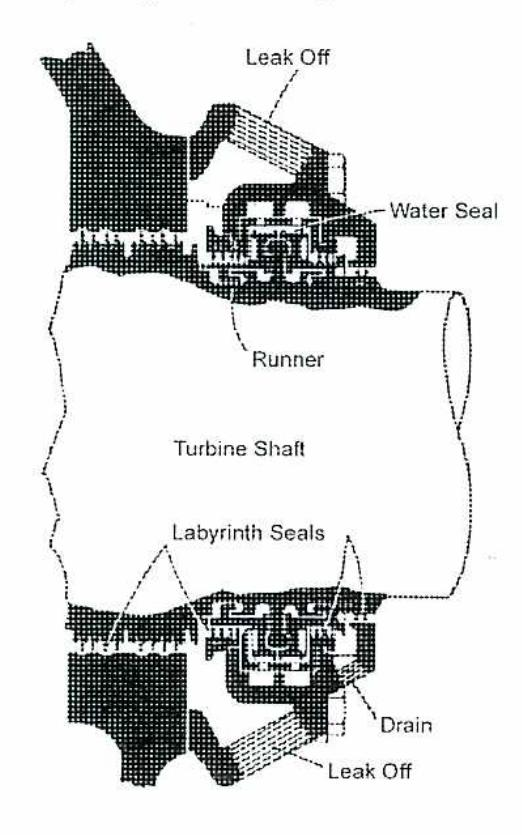
Figure 25 Water Sealed Gland Overview
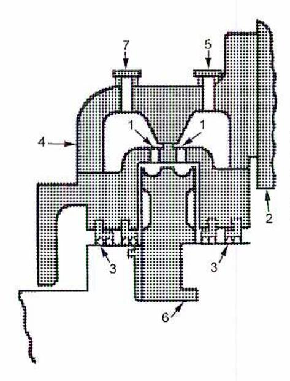
Figure 26 Water Sealed Gland Detail